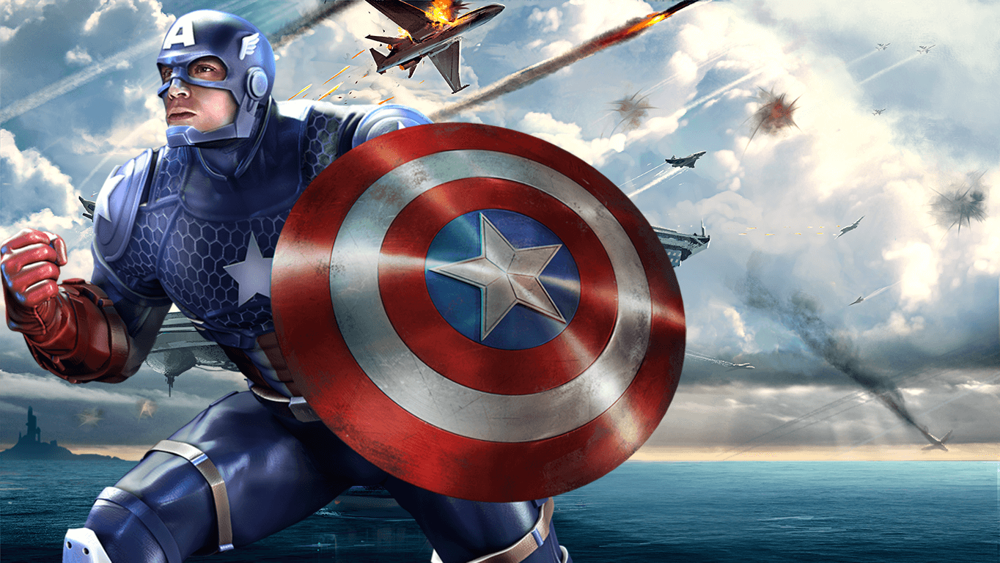

Captain America
Steven "Steve" Rogers
Aliases
Nomad, The Captain, Steven Grant Rogers, Roger Stevens, Yeoman America, Cap, The Sentinel of Liberty, Star-Spangled Avenger; also has impersonated Crossbones
Identity
Publicly known
Citizenship
U.S.A
Place of Birth
New York, New York
Occupation
Adventurer, formerly WPA artist, soldier, police officer, teacher, freelance illustrator, special S.H.I.E.L.D. operative
Known Relatives
Joseph and Sarah Rogers (parents, deceased), unidentified grandfather (presumed deceased), Steven Rogers (Captain America, 18th century ancestor, presumed deceased)
Group Affiliation
Secret Avengers; formerly the Avengers, Invaders, Captain's Unnamed Superhero Team, Redeemers; formerly partner of Bucky, Rick Jones, Falcon, Demolition Man and Nomad (Jack Monroe)
Education
High school graduate; one year of art school; military basic training; private tutoring in hand-to-hand combat, gymnastics, military strategy, piloting, demolition, and other disciplines
Powers
Captain America represented the pinnacle of human physical perfection. He experienced a time when he was augmented to superhuman levels, but generally performed just below superhuman levels for most of his career. Captain America had a very high intelligence as well as agility, strength, speed, endurance, and reaction time superior to any Olympic athlete who ever competed. The Super-Soldier formula that he had metabolized had enhanced all of his bodily functions to the peak of human efficiency. Most notably, his body eliminates the excessive build-up of fatigue-producing poisons in his muscles, granting him phenomenal endurance.
Abilities
Captain America had mastered the martial arts of American-style boxing and judo, and had combined these disciplines with his own unique hand-to-hand style of combat. He had also shown skill and knowledge of a number of other martial arts. He engaged in a daily regimen of rigorous exercise (including aerobics, weight lifting, gymnastics, and simulated combat) to keep himself in peak condition. Captain America was one of the finest human combatants Earth had ever known.
Weapons
Captain America's only weapon was his shield, a concave disk 2.5 feet in diameter, weighing 12 pounds. It is made of a unique Vibranium-metal alloy that has never been duplicated. The shield was cast by American metallurgist Dr. Myron MacLain, who was contracted by the U.S. government to create an impenetrable substance to use for tanks during World War II. MacLain was never able to duplicate the process due to his inability to identify a still unknown factor that played a role in it. The shield was awarded to Captain America by the government several months after the beginning of his career. The shield has great aerodynamic properties: it is able to slice through the air with minimal wind resistance and deflection of path. Its great overall resilience, combined with its natural concentric stiffness, enables it to rebound from objects with minimal loss of angular momentum. It is virtually indestructible: it is resistant to penetration, temperature extremes, and the entire electromagnetic spectrum of radiation. The only way it can be damaged in any way is by tampering with its molecular bonding.